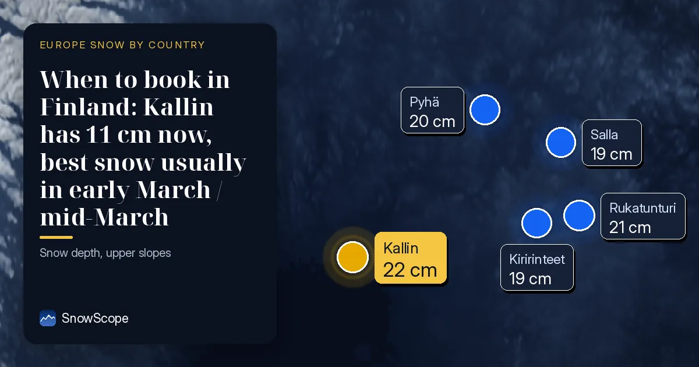
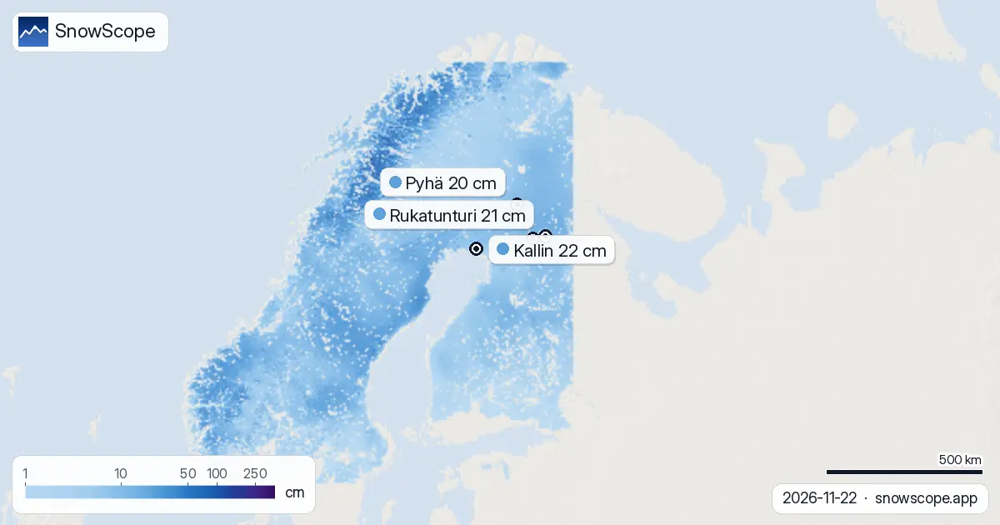
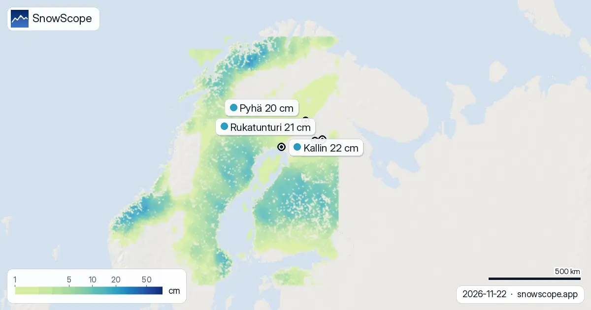

When to book in Finland: Kallin has 11 cm now, best snow usually in early March / mid-March
Kallin sits at 11 cm today, well above the 6 cm you would see on a typical 22 November. The resort's peak snow season comes in early to mid-March, when depths usually peak across Finland's lowland hills.
See the live snow forecast for Kallin in the SnowScope appSnow depth, powder alerts and the 3D map, free.
Why timing matters for lower resorts
Kallin and other Finnish resorts below 500 m reach their deepest snow weeks 9–11 (the first three weeks of March). Planning a trip then gives you the best chance of continuous runs and a solid base beneath your skis.
Early-November snow sits thin and patchy. Today, 94 % of Finland's high ground is white, but the depth varies sharply. At low altitude (0–500 m), you average only 7 cm. Above 500 m, that doubles to 15 cm, and above 1,000 m it jumps to 42 cm. This height split is why upper slopes are skiing better than valley terrain right now.
| Resort | Today | Normal for the date | Share of normal |
|---|---|---|---|
| Kallin | 11 cm | 6 cm | 183 % |
| Rukatunturi | 21 cm | 20 cm | 105 % |
| Pyhä | 15 cm | 21 cm | 71 % |
| Kiririnteet | 18 cm | 21 cm | 86 % |
| Salla | 19 cm | 21 cm | 90 % |

Kallin's advantage this year
Kallin has 11 cm at its measurement height of 40 m, which is 183 % of normal for late November. That gain came as 281,570 km² of Finland turned white in the past week alone—a surge of 111,890 km² since 16 November. Only 2 of the five main resorts shown here are running above their historical average today; Kallin is the clearer winner.
Its upper slopes hold 22 cm, the deepest on the SnowScope map of Finland. Rukatunturi (21 cm), Pyhä (20 cm), Kiririnteet and Salla (both 19 cm) follow. The gap between top and measurement points reflects the natural slope, so upper runs are always thicker than the mid-mountain figures suggest.

What the next week brings
Monday 23 November is the snowiest day ahead, with up to 4 cm possible on the best slopes. The three-day outlook adds no more than 5 cm overall, so fresh snow will not pile up quickly. The seven-day total also stays at 5 cm maximum.
The Kainuu hills have drawn the most snow over three days, with 18 cm locally. Most of Finland is in a quieter phase now. December (weeks 1–2) shows only about 3 cm across a full week, so the winter lull typical of late November is settling in.
The snow map across altitudes
Ground below 500 m: 7 cm average, 94 % white. Many lower runs still have rocks and thin patches.
Ground 500–1,000 m: 15 cm average, fully white. Ski runs at this height work, though base depth is still modest.
Ground above 1,000 m: 42 cm average, fully white. Upper terrain offers the most reliable conditions now.
How this week built snow cover
Finland's white area grew day by day: 157,360 km² on 16 November, then climbed steadily to 232,900 km² by 21 November, and reached 281,570 km² by 22 November. The largest jump came on the final day—48,580 km² added in 24 hours.
56 of Finland's 67 mapped resorts now hold snow. Kallin held the lead through most of the week, losing it briefly to Pyhä on 20–21 November before reclaiming the top slot on 22 November with 22 cm on its upper slopes.
Neighbours' conditions
Sweden sits 96 % white with Björkliden at 136 cm, the deepest resort across both borders. Norway is 94 % white, and Riksgränsen holds 166 cm. Both neighbours expect 6–15 cm in the week ahead, so the snow is building right across Scandinavia.
Tips for skiers
- Book your trip for early to mid-March (weeks 9–11) if you want Kallin and other low-altitude resorts at their deepest and most reliable.
- If you go in late November, focus on runs above 500 m where the base is thicker and more continuous.
- Early-season snow masks rocks and roots: start on groomed runs to find the best coverage and avoid damage to your skis.
- Wind can pack upper slopes hard: check conditions on the day and ride lift reports before you head to the ridge.
- Confirm the resort's lift status before you travel; snow depth alone does not mean slopes are open.
About these numbers
Resort snow depths are the deepest snow on the resort's upper slopes on the date shown; they are estimates for an area, not a measurement at one point. Forecasts can change. Always read the official avalanche bulletin before going off-piste.
Cite this report
For research, teaching or the press: the numbers and charts are free to reuse under CC BY 4.0 with this citation.
SnowScope (2026), When to book in Finland: Kallin has 11 cm now, best snow usually in early March / mid-March, https://snowscope.app/blog/en/2026/11/finland-when-to-book-ski-trip-22-november-2026.html, accessed 2026-11-22
SnowScope (Atlas Labs). (2026, November 22). When to book in Finland: Kallin has 11 cm now, best snow usually in early March / mid-March. SnowScope snow reports. https://snowscope.app/blog/en/2026/11/finland-when-to-book-ski-trip-22-november-2026.html
BibTeX
@misc{snowscope2026finlandwhentobookskitrip,
author = {{SnowScope (Atlas Labs)}},
title = {When to book in Finland: Kallin has 11 cm now, best snow usually in early March / mid-March},
year = {2026},
month = nov,
howpublished = {\url{https://snowscope.app/blog/en/2026/11/finland-when-to-book-ski-trip-22-november-2026.html}},
note = {Published 2026-11-22 12:34 UTC; accessed 2026-11-22}
}· CC BY 4.0 · Methods, data and tools →
Kallin: snow and temperature by height, this winter vs last (tools) →
Follow Kallin
Free: a message when fresh snow is coming, and the forecast every morning.
More snow reports

Ruka's 6-day pass costs EUR 265. Snow odds jump from 39% in early December to 85% by Christmas week. Plan mid-month or later.

Savin Kuk above Žabljak picked up 22 cm of snow from 13 to 19 November and still has 6 cm today. Kolašin 1450 and 1600 are bare. The week day by day, and the next chances.

Up to 30 cm of snow fell on northern Velebit and Bjelolasica on Friday 13 November 2026. By Tuesday it was gone. Day by day, what the mountains kept, and when snow comes back.